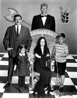
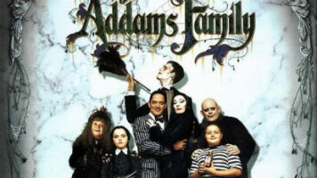

La mejor película de la historia
Serie
Fue una serie de televisión estadounidense, comedia infantil de fantasía, que se emitió por la red de televisión ABC desde 1964 hasta 1966.

The Addams Family
Televisión La familia Addams (serie de televisión) de 1964-1966. La familia Addams (serie de animación de 1973). La familia Addams (serie de animación de 1992). La nueva familia Addams, una adaptación de 1998-1999 de la serie original. Películas The Addams Family (película), comedia de 1991. Addams Family Values, comedia de 1993, secuela de la anterior. La reunión de los Addams, comedia de 1998, secuela de las dos anteriores. Juegos Los locos Addams (Pinball) 1992. Los locos Addams (videojuego) 1992. Los locos Addams (videojuego de portátil) 1992.
Pelicula
Film estadounidense de comedia y terror de 1991. Dirigido por Barry Sonnenfeld, basado en la historia original de Charles Addams.

Con información desde wikipedia